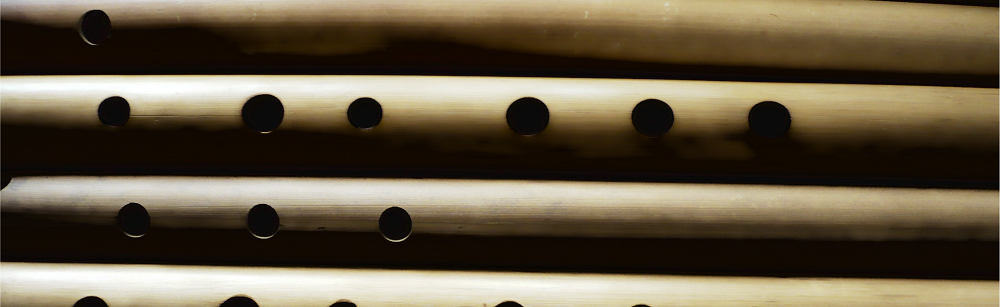
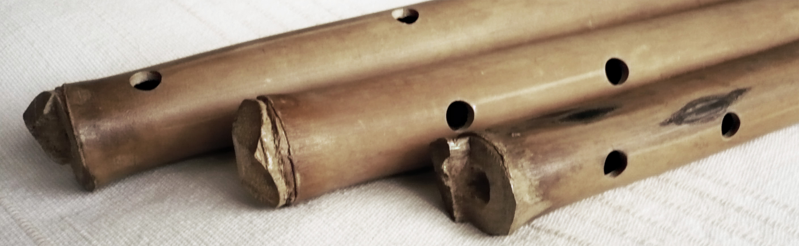

Actividades
Inicio > Actividades
Las actividades desarrolladas en Instrumentarium trasladan la investigación sobre instrumentos musicales a contextos públicos, educativos e institucionales. A través de conferencias, demostraciones, talleres y programas colaborativos, estas iniciativas exploran los instrumentos no solo como herramientas para la producción de sonido, sino también como documentos que encarnan historias, territorios y sistemas de conocimiento.
Con materiales de archivos, bibliotecas, museos e investigación de campo, estas actividades combinan la interpretación, la documentación y la reflexión crítica. Están diseñadas para públicos diversos —incluyendo instituciones culturales, universidades, organizaciones comunitarias y el público en general— y pueden adaptarse a diferentes contextos y formatos.

Conferencias magistrales
Las conferencias magistrales presentan los marcos conceptuales que guían el proyecto de Instrumentarium. Estas charlas exploran los instrumentos musicales como documentos materiales que encarnan historias, territorios y sistemas de conocimiento, conectando la organología con los archivos, la memoria cultural y las políticas de representación.
A partir de estudios de caso de América Latina y otras regiones, estas conferencias examinan cuestiones como la clasificación y la descripción de instrumentos en archivos, cómo las tradiciones sonoras se codifican como "patrimonio", o cómo la grabación, la circulación y las narrativas institucionales configuran lo que se reconoce como tradición.
Diseñadas para universidades, museos, congresos y programas culturales, las conferencias magistrales combinan el análisis histórico, la reflexión crítica y ejemplos extraídos del estudio y la documentación de instrumentos musicales y culturas sonoras.
Ejemplos sobre las diferentes áreas de trabajo
A. Instrumentos como sistemas de conocimiento
- Lo que los instrumentos saben: el diseño musical como conocimiento cultural
- Más allá del sonido: los instrumentos musicales como documentos de cultura y memoria
- La inteligencia de los instrumentos: cómo las tecnologías musicales almacenan el conocimiento
B. Clasificación y documentación de instrumentos
- Cuando los instrumentos no encajan en el catálogo: los límites de la clasificación musical
- Más allá de Hornbostel-Sachs: Repensando la descripción de los instrumentos
- El problema del archivo: Por qué los instrumentos musicales se resisten a nuestras categorías
C. Sonido, territorio y cultura material
- Sonido y paisaje: Cómo el territorio moldea los instrumentos musicales
- Del bosque al festival: Materiales, entorno y diseño de instrumentos
- Instrumentos del lugar: Ecología, recursos y tecnología musical
D. Tradición, canon y grabación
- ¿Quién decide qué es "tradicional"? Grabación, canon y autoridad musical
- Del sonido local al canon global: Cómo las grabaciones transforman la tradición
- Cuando una grabación define una tradición
E. Colecciones y archivos de instrumentos
- Instrumentos musicales en el archivo: Problemas de descripción y contexto
- Curación de objetos sonoros: Repensando las colecciones de instrumentos en museos
- Del artefacto al archivo: Interpretación de instrumentos musicales en colecciones

Conferencias-demostraciones
Las conferencias-demostraciones combinan charlas y sonido en vivo. En estos programas, los instrumentos musicales se presentan, tocan y examinan como artefactos históricos y culturales. En lugar de tratarlos únicamente como objetos de interpretación, las sesiones exploran su construcción, su lógica acústica, sus roles sociales y las huellas documentales que dejan en archivos y tradiciones orales.
A través de ejemplos sonoros, materiales visuales y comentarios contextuales, el público se encuentra con los instrumentos como portadores de memoria y conocimiento. Estas actividades se basan en la investigación de campo, fuentes de archivo y las propias colecciones del autor.
Ejemplos de conferencias-demostraciones centradas en instrumentos
-
Cómo funcionan los aerófonos: aire, resonancia y sonido
De la cuerda al sonido: principios de los cordófonos
De la piel al sonido: comprender los membranófonos
- Flautas de Pan del altiplano andino: estructura, lógica de conjunto, y sonido
- Quenas en distintos materiales: caña, hueso, madera y más
- Arcos musicales de la Amazonía: resonancia, voz y cuerpo
- Voces quebradas: pinkillus, tarkas y otros
- Todos los charangos
- Los clarinetes tradicionales de Sudamérica
Ejemplos sobre las diferentes áreas de trabajo
A. Instrumentos como sistemas de conocimiento
- Lo que saben los instrumentos: Sonido, artesanía y memoria cultural
- El conocimiento dentro de los instrumentos: Diseño, gesto y memoria
- Escuchando el objeto: Los instrumentos como portadores de conocimiento
B. Clasificación y documentación de instrumentos
- Cuando los instrumentos no encajan en el catálogo
- Más allá de Hornbostel-Sachs: Instrumentos que rompen el sistema
- ¿Cómo se clasifica esto? Problemas en la descripción de instrumentos musicales
C. Sonido, territorio y cultura material
- Sonidos del lugar: Instrumentos moldeados por el paisaje
- Materiales y entorno en el sonido de los instrumentos musicales
- Territorio en el sonido: Cómo el paisaje se convierte en música
D. Tradición, canon y grabación
- Grabación y el nacimiento del canon musical
- El sonido de la tradición: Cómo las grabaciones moldean la identidad musical
- De la música de pueblo a la música tradicional
E. Colecciones y archivos de instrumentos
- Instrumentos en el archivo: Objetos, sonido y memoria
- Lo que los museos silencian: Interpretando las colecciones de instrumentos
- Del artefacto al sonido: Dando vida a las colecciones de instrumentos

Talleres y capacitaciones
Los talleres y capacitaciones ofrecen espacios prácticos para el aprendizaje y el debate en torno a la documentación, interpretación y gestión de instrumentos musicales y tradiciones sonoras. Estas actividades combinan la reflexión conceptual con ejercicios prácticos, permitiendo a los participantes examinar instrumentos, grabaciones y materiales de archivo como fuentes de conocimiento cultural e histórico.
Las sesiones abordan temas como la documentación de instrumentos en colecciones, los desafíos de la clasificación y catalogación, los métodos de organología de campo y los enfoques para trabajar con el patrimonio sonoro en contextos institucionales y comunitarios.
Estos programas están diseñados para profesionales de museos, archivistas, bibliotecarios, investigadores, estudiantes y otras personas involucradas en el estudio o la gestión del patrimonio musical y sonoro.
Ejemplos sobre las diferentes áreas de trabajo
A. Instrumentos como sistemas de conocimiento
- Documentación de instrumentos como sistemas de conocimiento
- Lectura del instrumento: métodos para la interpretación de objetos musicales
- Instrumentos como documentos: enfoques de la cultura material musical
B. Clasificación y documentación de instrumentos
- Descripción de instrumentos musicales: desafíos y soluciones de catalogación
- Más allá de Hornbostel-Sachs: enfoques prácticos para la clasificación de instrumentos
- Metadatos para instrumentos musicales: Métodos y marcos
C. Sonido, territorio y cultura material
- Instrumentos y entorno: Estudio del sonido en un contexto ecológico
- Materiales y artesanía en el diseño de instrumentos
- Organología de campo: Documentación de instrumentos en su contexto cultural
D. Tradición, canon y grabación
- Grabación, circulación y la construcción de la tradición musical
- Trabajando con archivos sonoros: Interpretación de tradiciones grabadas
- De la interpretación al patrimonio: Documentación de prácticas musicales vivas
E. Colecciones y archivos de instrumentos
- Documentación de colecciones de instrumentos musicales
- Interpretación de colecciones de instrumentos en museos y archivos
- Del objeto al archivo: Métodos para el estudio de instrumentos musicales en colecciones

Seminarios académicos
Los seminarios académicos ofrecen debates profundos, orientados a la investigación, sobre el estudio y la documentación de instrumentos musicales y tradiciones sonoras. Estas sesiones examinan cuestiones teóricas y metodológicas en organología, estudios archivísticos e historia cultural del sonido, situando los instrumentos dentro de marcos más amplios de conocimiento, memoria y patrimonio.
Estos seminarios están diseñados principalmente para estudiantes de posgrado, investigadores y público académico especializado interesado en el estudio de instrumentos musicales, culturas sonoras y su documentación.
Ejemplos sobre las diferentes áreas de trabajo
A. Instrumentos como sistemas de conocimiento
- Instrumentos musicales como sistemas de conocimiento: Enfoques epistemológicos
- Organología y conocimiento: Repensando los instrumentos musicales como documentos
- Conocimiento material y tecnología musical
B. Clasificación y documentación de instrumentos
- El problema de la clasificación de instrumentos musicales
- Taxonomías organológicas: Historias, límites y alternativas
- Documentación de instrumentos: Archivos, metadatos y representación
C. Sonido, territorio y cultura material
- Sonido, entorno y cultura material
- Territorio, ecología y sistemas de instrumentos musicales
- Territorio y prácticas sonoras: Instrumentos en el paisaje
D. Tradición, canon y grabación
- La construcción de la tradición musical
- Grabación, formación de canon y políticas patrimoniales
- Archivos sonoros: Tecnologías de grabación y memoria musical
E. Colecciones y archivos de instrumentos
- Instrumentos musicales en archivos y museos
- Interpretación de colecciones de instrumentos
- Del artefacto al archivo: Instrumentos musicales como objetos documentales

Cursos cortos
Los cursos cortos ofrecen programas estructurados de varias sesiones dedicados a temas específicos dentro del estudio de los instrumentos musicales y las culturas sonoras. Estos cursos ofrecen una exploración más sostenida de conceptos, fuentes y metodologías que las clases magistrales o seminarios individuales, permitiendo a los participantes interactuar tanto con perspectivas teóricas como con estudios de caso concretos.
Los temas de los cursos pueden incluir los instrumentos musicales como sistemas de conocimiento, la relación entre la organología y los archivos sonoros, y las conexiones entre el sonido, el territorio y la práctica cultural. Mediante una combinación de conferencias, debates y análisis de materiales documentales, los participantes examinan cómo los instrumentos funcionan no solo como dispositivos musicales, sino también como portadores de conocimiento histórico, ecológico y social.
Ejemplos sobre las diferentes áreas de trabajo
A. Instrumentos como sistemas de conocimiento
- Instrumentos musicales como sistemas de conocimiento
- Lectura de instrumentos musicales: Conocimiento, diseño y cultura
- Conocimiento material en instrumentos musicales
B. Clasificación y documentación de instrumentos
- Clasificación de instrumentos musicales: Sistemas, problemas y alternativas
- Documentación de instrumentos musicales en la investigación y los archivos
- Clasificación organológica en la práctica
C. Sonido, territorio y cultura material
- Sonido, territorio e instrumentos musicales
- Instrumentos musicales en el contexto ecológico y cultural
- Materiales, paisaje y diseño de instrumentos
D. Tradición, canon y grabación
- De la grabación al canon: Cómo se estabilizan las tradiciones
- De la práctica local a la "tradición": Circulación y formación del canon
- Archivos sonoros y la política de la memoria musical
E. Colecciones y archivos de instrumentos
- Colecciones de instrumentos musicales: Documentación e interpretación
- Trabajando con instrumentos musicales en museos y archivos
- Instrumentos musicales como objetos de archivo

Asesoría y consultoría
Las actividades de asesoría y consultoría apoyan a museos, archivos, bibliotecas e instituciones culturales que trabajan con instrumentos musicales y colecciones sonoras. Estas colaboraciones se centran en mejorar la documentación, la interpretación y la gestión de materiales relacionados con las tradiciones musicales y el patrimonio sonoro.
Las actividades pueden incluir revisiones de colecciones, residencias de investigación, auditorías institucionales de las prácticas de catalogación y clasificación, y laboratorios de documentación destinados a desarrollar marcos descriptivos más claros para instrumentos y materiales de archivo relacionados. A través de estos procesos, las instituciones pueden reevaluar cómo se registran, contextualizan e integran los instrumentos en sistemas más amplios de conocimiento y memoria cultural.
Ejemplos sobre las diferentes áreas de trabajo
A. Instrumentos como sistemas de conocimiento
- Replanteando los instrumentos musicales como sistemas de conocimiento en instituciones culturales
- Interpretación de instrumentos musicales como objetos culturales y documentales
- Marcos conceptuales para la interpretación de instrumentos
B. Clasificación y documentación de instrumentos
- Revisión y rediseño de los sistemas de clasificación de instrumentos
- Mejora de la catalogación y documentación de instrumentos musicales
- Desarrollo de marcos de metadatos para colecciones de instrumentos
C. Sonido, territorio y cultura material
- Contextualización de colecciones de instrumentos en paisajes culturales y ambientales
- Integración de contextos territoriales y culturales en la documentación de instrumentos
- Documentación de los contextos materiales y ecológicos de los instrumentos musicales
D. Tradición, canon y grabación
- Interpretación de las tradiciones grabadas en colecciones institucionales
- Replanteamiento del canon y la representación en archivos sonoros
- Análisis contextual de las tradiciones musicales grabadas
E. Colecciones y archivos de instrumentos
- Estrategias de revisión y documentación de colecciones de instrumentos musicales
- Asesoría sobre colecciones de instrumentos musicales en museos y archivos
- Repensando la interpretación de las colecciones de instrumentos
Contacto
Las instituciones, organizaciones y programas culturales interesados en organizar cualquiera de estas actividades pueden contactarnos para obtener más información. Los programas se adaptan a diferentes públicos, contextos institucionales y enfoques temáticos. Para consultas sobre disponibilidad, formatos y condiciones, utilice la información de contacto.